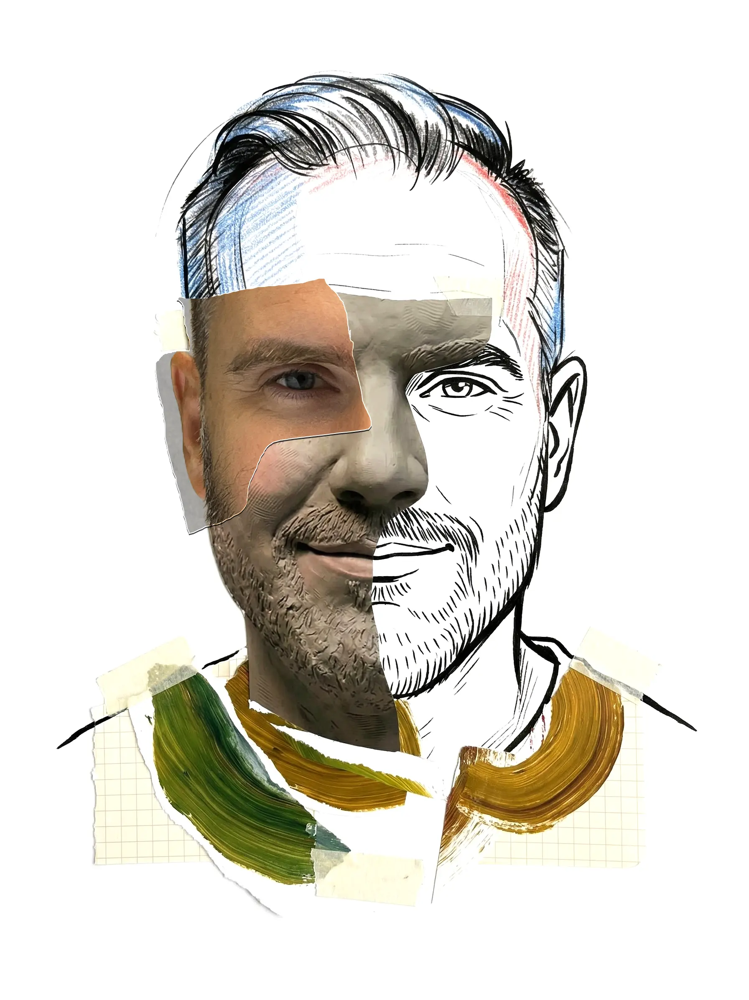

Jordan Hilliard is a designer and artist living and working in Vancouver, British Columbia. His practice spans environmental design, 3D visualization, and digital illustration.
Currently working on a range of visual projects, Jordan provides design consultancy for clients in Vancouver and abroad. His work is characterized by a deep curiosity for emerging technologies and a commitment to exploring new methods of digital production.
Jordan is available by request for consulting services and commissioned work. For more information, please enquire via email.